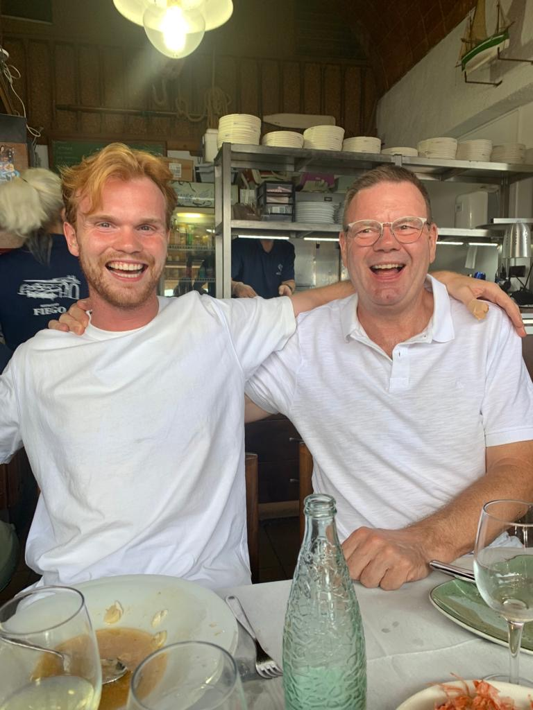

About Me
Hello! I'm Willem Momma, a 26-year old robotics engineer with a Master of Science degree from Delft University of Technology. My passion lies in the intersection of Robotics and Artificial Intelligence, with a special focus on the medical sector. Throughout my journey, I've worked on numerous projects both as a beginner software engineer and during my MSc studies. Currently, I hold a part-time position as a research scientist in Robotics and AI at Amsterdam University Medical Centers and serve as the technical lead in setting up a laboratory for surgical robotic research.
About This Website
This portfolio website is a hobby project, developed purely for fun using HTML and JavaScript. The landing page features a simple 2-DOF robot model rendered on a 2D canvas. A mousetracker, combined with PID control, is implemented to follow the mouse position and control the robot based on Jacobian calculations. While this site showcases my enjoyment of coding with basic web technologies, I also have professional experience in building websites using frameworks such as Next.js, WordPress, and Webflow.
The Robotics Projects page features a selection of projects completed during my MSc programme, both for coursework and personal research. These projects demonstrate various applications of robotics and AI, highlighting my academic and technical journey in this field.
The Development page showcases a collection of my software engineering projects, including web and app development as well as professional work.